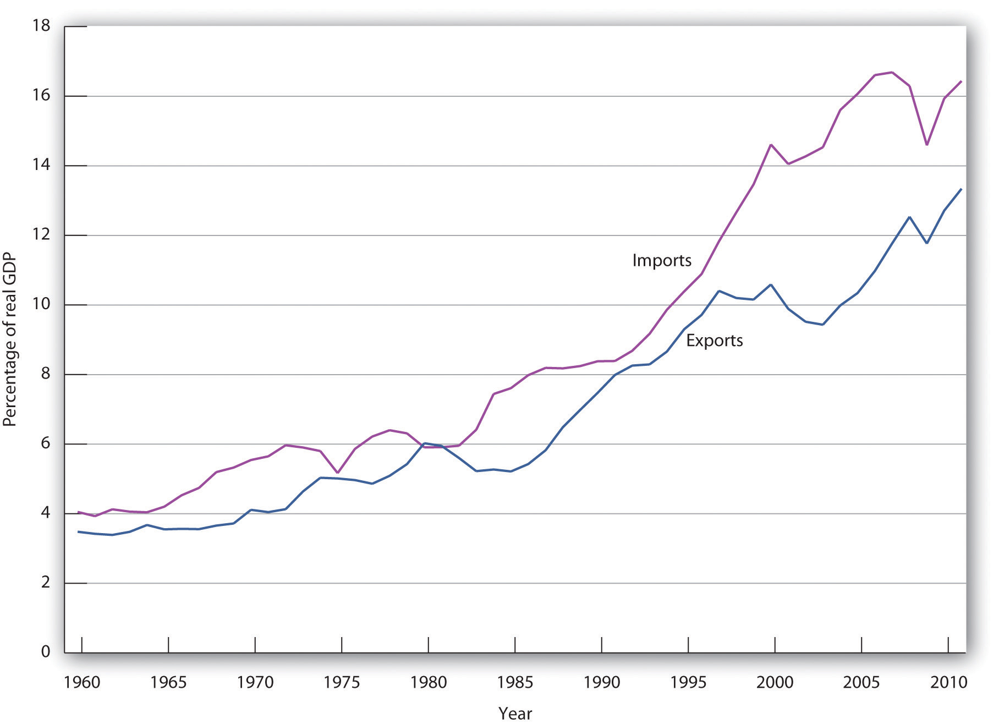
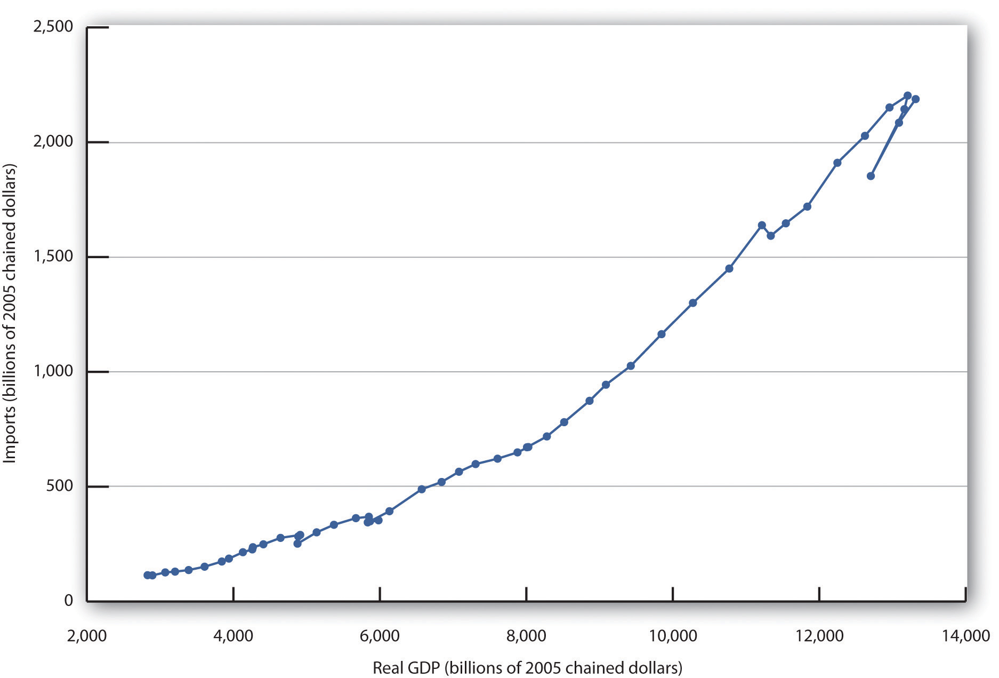
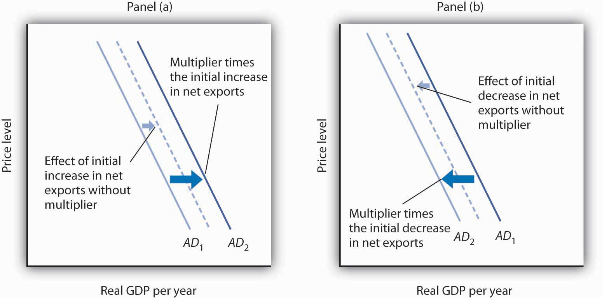
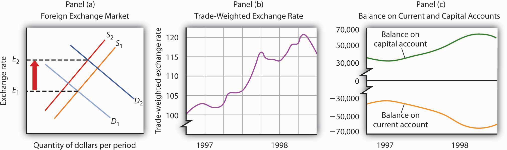

It became known as the “Asian Contagion,” and it swept the world as the 20th century came to a close.
Japan, crippled by the threat of collapse of many of its banks, seemed stuck in a recessionary gap for most of the decade. Because Japan was a major market for the exports of economies throughout East Asia, the slump in Japan translated into falling exports in neighboring economies. Slowed growth in a host of economies that had grown accustomed to phenomenal growth set the stage for trouble throughout the world.
The first crack appeared in Thailand, whose central bank had successfully maintained a stable exchange rate between the baht, Thailand’s currency, and the U.S. dollar. But weakened demand for Thai exports, along with concerns about the stability of Thai banks, put downward pressure on the baht. Thailand’s effort to shore up its currency ultimately failed, and the country’s central bank gave up the effort in July of 1997. The baht’s value dropped nearly 20% in a single day.
Holders of other currencies became worried about their stability and began selling. Central banks that, like Thailand’s, had held their currencies stable relative to the dollar, gave up their efforts as well. Malaysia quit propping up the ringgit less than two weeks after the baht’s fall. Indonesia’s central bank gave up trying to hold the rupiah’s dollar value a month later. South Korea let the won fall in November.
Currency crises continued to spread in 1998, capped by a spectacular plunge in the Russian ruble. As speculators sold other currencies, they bought dollars, driving the U.S. exchange rate steadily upward.
What was behind the currency crises that shook the world? How do changes in a country’s exchange rate affect its economy? How can events such as the fall of the baht and the ringgit spread to other countries?
We will explore the answers to these questions by looking again at how changes in a country’s exchange rate can affect its economy—and how changes in one economy can spread to others. We will be engaged in a study of international financeThe field that examines the macroeconomic consequences of the financial flows associated with international trade., the field that examines the macroeconomic consequences of the financial flows associated with international trade.
We will begin by reviewing the reasons nations trade. International trade has the potential to increase the availability of goods and services to everyone. We will look at the effects of trade on the welfare of people and then turn to the macroeconomic implications of financing trade.
How important is international trade?
Take a look at the labels on some of your clothing. You are likely to find that the clothes in your closet came from all over the globe. Look around any parking lot. You may find cars from Japan, Korea, Sweden, Britain, Germany, France, and Italy—and even the United States! Do you use a computer? Even if it is an American computer, its components are likely to have been assembled in Indonesia or in some other country. Visit the grocery store. Much of the produce may come from Latin America and Asia.
The international market is important not just in terms of the goods and services it provides to a country but also as a market for that country’s goods and services. Because foreign demand for U.S. exports is almost as large as investment and government purchases as a component of aggregate demand, it can be very important in terms of growth. The increase in exports in 2011, for example, accounted for about half of the gain in U.S. real GDP in that year.
International trade increases the quantity of goods and services available to the world’s consumers. By allocating resources according to the principle of comparative advantage, trade allows nations to consume combinations of goods and services they would be unable to produce on their own, combinations that lie outside each country’s production possibilities curve.
A country has a comparative advantage in the production of a good if it can produce that good at a lower opportunity cost than can other countries. If each country specializes in the production of goods in which it has a comparative advantage and trades those goods for things in which other countries have a comparative advantage, global production of all goods and services will be increased. The result can be higher levels of consumption for all.
If international trade allows expanded world production of goods and services, it follows that restrictions on trade will reduce world production. That, in a nutshell, is the economic case for free trade. It suggests that restrictions on trade, such as a tariffA tax imposed on imported goods and services., a tax imposed on imported goods and services, or a quotaA ceiling on the quantity of specific goods and services that can be imported, which reduces world living standards., a ceiling on the quantity of specific goods and services that can be imported, reduce world living standards.
The conceptual argument for free trade is a compelling one; virtually all economists support policies that reduce barriers to trade. Economists were among the most outspoken advocates for the 1993 ratification of the North American Free Trade Agreement (NAFTA), which virtually eliminated trade restrictions between Mexico, the United States, and Canada, and the 2004 Central American Free Trade Agreement (CAFTA), which did the same for trade between the United States, Central America, and the Dominican Republic. They supported the 2007 free trade agreement with Peru and the 2011 agreements with Colombia, Panama, and South Korea. Most economists have also been strong supporters of worldwide reductions in trade barriers, including the 1994 ratification of the General Agreement on Tariffs and Trade (GATT), a pact slashing tariffs and easing quotas among 117 nations, including the United States, and the Doha round of World Trade Organization negotiations, named after the site of the first meeting in Doha, Qatar, in 2001 and still continuing. In Europe, member nations of the European Union (EU) have virtually eliminated trade barriers among themselves, and 17 EU nations now have a common currency, the euro, and a single central bank, the European Central Bank, established in 1999. Trade barriers have also been slashed among the economies of Latin America and of Southeast Asia. A treaty has been signed that calls for elimination of trade barriers among the developed nations of the Pacific Rim (including the United States and Japan) by 2010 (although this deadline was missed) and among all Pacific rim nations by 2020.
The global embrace of the idea of free trade demonstrates the triumph of economic ideas over powerful forces that oppose free trade. One source of opposition to free trade comes from the owners of factors of production used in industries in which a nation lacks a comparative advantage.
A related argument against free trade is that it not only reduces employment in some sectors but also reduces employment in the economy as a whole. In the long run, this argument is clearly wrong. The economy’s natural level of employment is determined by forces unrelated to trade policy, and employment moves to its natural level in the long run.
Further, trade has no effect on real wage levels for the economy as a whole. The equilibrium real wage depends on the economy’s demand for and supply curve of labor. Trade affects neither.
In the short run, trade does affect aggregate demand. Net exports are one component of aggregate demand; a change in net exports shifts the aggregate demand curve and affects real GDP in the short run. All other things unchanged, a reduction in net exports reduces aggregate demand, and an increase in net exports increases it.
Protectionist sentiment always rises during recessions. Unlike what happened during the Great Depression of the 1930s, there was a lot of talk during the Great Recession about more protection, but most countries avoided imposing substantially increased trade restrictions.
International trade is important, and its importance is increasing. For example, from 1990 to 2010, world output growth was about 3% per year on average, while world export growth averaged about 6% per year.
While international trade was rising around the world, it was playing a more significant role in the United States as well. In 1960, exports represented just 3.5% of real GDP; by 2011, exports accounted for more than 13% of real GDP. Figure 30.1 "U.S. Exports and Imports Relative to U.S. Real GDP, 1960–2011" shows the growth in exports and imports as a percentage of real GDP in the United States from 1960 to 2011.
Why has world trade risen so spectacularly? Two factors have been important. First, advances in transportation and communication have dramatically reduced the costs of moving goods around the globe. The development of shipping containerization that allows cargo to be moved seamlessly from trucks or trains to ships, which began in 1956, drastically reduced the cost of moving goods around the world, by as much as 90%. As a result, the numbers of container ships and their capacities have markedly increased.For an interesting history of this remarkable development, see Marc Levinson, The Box: How the Shipping Container Made the World Smaller and the World Economy Bigger (Princeton: Princeton University Press, 2006). Second, we have already seen that trade barriers between countries have fallen and are likely to continue to fall.
Figure 30.1 U.S. Exports and Imports Relative to U.S. Real GDP, 1960–2011
The chart shows exports and imports as a percentage of real GDP from 1960 through 2011.
Source: Bureau of Economic Analysis, NIPA Table 1.1.6 (revised February 29, 2012).
As trade has become more important worldwide, exports and imports have assumed increased importance in nearly every country on the planet. We have already discussed the increased shares of U.S. real GDP represented by exports and by imports. We will find in this section that the economy both influences, and is influenced by, net exports. First, we will examine the determinants of net exports and then discuss the ways in which net exports affect aggregate demand.
Net exports equal exports minus imports. Many of the same forces affect both exports and imports, albeit in different ways.
As incomes in other nations rise, the people of those nations will be able to buy more goods and services—including foreign goods and services. Any one country’s exports thus will increase as incomes rise in other countries and will fall as incomes drop in other countries.
A nation’s own level of income affects its imports the same way it affects consumption. As consumers have more income, they will buy more goods and services. Because some of those goods and services are produced in other nations, imports will rise. An increase in real GDP thus boosts imports; a reduction in real GDP reduces imports. Figure 30.2 "U.S. Real GDP and Imports, 1960–2011" shows the relationship between real GDP and the real level of import spending in the United States from 1960 through 2011. Notice that the observations lie close to a straight line one could draw through them and resemble a consumption function.
Figure 30.2 U.S. Real GDP and Imports, 1960–2011
The chart shows annual values of U.S. real imports and real GDP from 1960 through 2011. The observations lie quite close to a straight line.
Source: Bureau of Economic Analysis, NIPA Table 1.1.6 (revised February 29, 2012).
A change in the price level within a nation simultaneously affects exports and imports. A higher price level in the United States, for example, makes U.S. exports more expensive for foreigners and thus tends to reduce exports. At the same time, a higher price level in the United States makes foreign goods and services relatively more attractive to U.S. buyers and thus increases imports. A higher price level therefore reduces net exports. A lower price level encourages exports and reduces imports, increasing net exports. As we saw in the chapter that introduced the aggregate demand and supply model, the negative relationship between net exports and the price level is called the international trade effect and is one reason for the negative slope of the aggregate demand curve.
The purchase of U.S. goods and services by foreign buyers generally requires the purchase of dollars, because U.S. suppliers want to be paid in their own currency. Similarly, purchases of foreign goods and services by U.S. buyers generally require the purchase of foreign currencies, because foreign suppliers want to be paid in their own currencies. An increase in the exchange rate means foreigners must pay more for dollars, and must thus pay more for U.S. goods and services. It therefore reduces U.S. exports. At the same time, a higher exchange rate means that a dollar buys more foreign currency. That makes foreign goods and services cheaper for U.S. buyers, so imports are likely to rise. An increase in the exchange rate should thus tend to reduce net exports. A reduction in the exchange rate should increase net exports.
A country’s exports depend on its own trade policies as well as the trade policies of other countries. A country may be able to increase its exports by providing some form of government assistance (such as special tax considerations for companies that export goods and services, government promotional efforts, assistance with research, or subsidies). A country’s exports are also affected by the degree to which other countries restrict or encourage imports. The United States, for example, has sought changes in Japanese policies toward products such as U.S.-grown rice. Japan banned rice imports in the past, arguing it needed to protect its own producers. That has been a costly strategy; consumers in Japan typically pay as much as 10 times the price consumers in the United States pay for rice. Japan has given in to pressure from the United States and other nations to end its ban on foreign rice as part of the GATT accord. That will increase U.S. exports and lower rice prices in Japan.
Similarly, a country’s imports are affected by its trade policies and by the policies of its trading partners. A country can limit its imports of some goods and services by imposing tariffs or quotas on them—it may even ban the importation of some items. If foreign governments subsidize the manufacture of a particular good, then domestic imports of the good might increase. For example, if the governments of countries trading with the United States were to subsidize the production of steel, then U.S. companies would find it cheaper to purchase steel from abroad than at home, increasing U.S. imports of steel.
Consumer preferences are one determinant of the consumption of any good or service; a shift in preferences for a foreign-produced good will affect the level of imports of that good. The preference among the French for movies and music produced in the United States has boosted French imports of these services. Indeed, the shift in French preferences has been so strong that the government of France, claiming a threat to its cultural heritage, has restricted the showing of films produced in the United States. French radio stations are fined if more than 40% of the music they play is from “foreign” (in most cases, U.S.) rock groups.
Changes in technology can affect the kinds of capital firms import. Technological changes have changed production worldwide toward the application of computers to manufacturing processes, for example. This has led to increased demand for high-tech capital equipment, a sector in which the United States has a comparative advantage and tends to dominate world production. This has boosted net exports in the United States.
Net exports affect both the slope and the position of the aggregate demand curve. A change in the price level causes a change in net exports that moves the economy along its aggregate demand curve. This is the international trade effect. A change in net exports produced by one of the other determinants of net exports listed above (incomes and price levels in other nations, the exchange rate, trade policies, and preferences and technology) will shift the aggregate demand curve. The magnitude of this shift equals the change in net exports times the multiplier, as shown in Figure 30.3 "Changes in Net Exports and Aggregate Demand". Panel (a) shows an increase in net exports; Panel (b) shows a reduction. In both cases, the aggregate demand curve shifts by the multiplier times the initial change in net exports, provided there is no other change in the other components of aggregate demand.
Figure 30.3 Changes in Net Exports and Aggregate Demand
In Panel (a), an increase in net exports shifts the aggregate demand curve to the right by an amount equal to the multiplier times the initial change in net exports. In Panel (b), an equal reduction in net exports shifts the aggregate demand curve to the left by the same amount.
Changes in net exports that shift the aggregate demand curve can have a significant impact on the economy. The United States, for example, experienced a slowdown in the rate of increase in real GDP in the second and third quarters of 1998—virtually all of this slowing was the result of a reduction in net exports caused by recessions that staggered economies throughout Asia. The Asian slide reduced incomes there and thus reduced Asian demand for U.S. goods and services. We will see in the next section another mechanism through which difficulties in other nations can cause changes in a nation’s net exports and its level of real GDP in the short run.
Draw graphs showing the aggregate demand and short-run aggregate supply curves in each of four countries: Mexico, Japan, Germany, and the United States. Assume that each country is initially in equilibrium with a real GDP of Y1 and a price level of P1. Now show how each of the following four events would affect aggregate demand, the price level, and real GDP in the country indicated.
Throughout 2003 and the first half of 2004, the Canadian dollar, nicknamed the loonie after the Canadian bird that is featured on its one-dollar coin, rose sharply in value against the U.S. dollar. Because the United States and Canada are major trading partners, the changing exchange rate suggested that, other things equal, Canadian exports to the United States would fall and imports rise. The resulting fall in net exports, other things equal, could slow the rate of growth in Canadian GDP.
Fortunately for Canada, “all other things” were not equal. In particular, strong income growth in the United States and China increased the demand for Canadian exports. In addition, the loonie’s appreciation against other currencies was less dramatic, and so Canadian exports remained competitive in those markets. While imports did increase, as expected due to the exchange rate change, exports grew at a faster rate, and hence net exports increased over the period.
In sum, Canadian net exports grew, although not by as much as they would have had the loonie not appreciated. As Beata Caranci, an economist for Toronto Dominion Bank put it, “We might have some bumpy months ahead but it definitely looks like the worst is over. … While Canadian exports appear to have survived the loonie’s run-up, their fortunes would be much brighter if the exchange rate were still at 65 cents.”
Source: Steven Theobald, “Exports Surviving Loonie’s Rise: Study,” Toronto Star, July 13, 2004, p. D1.
There is an important difference between trade that flows, say, from one city to another and trade that flows from one nation to another. Unless they share a common currency, as some of the nations of the European Union do, trade among nations requires that currencies be exchanged as well as goods and services. Suppose, for example, that buyers in Mexico purchase silk produced in China. The Mexican buyers will pay in Mexico’s currency, the peso; the manufacturers of the silk must be paid in China’s currency, the yuan. The flow of trade between Mexico and China thus requires an exchange of pesos for yuan.
This section examines the relationship between spending that flows into a country and spending that flows out of it. These spending flows include not only spending for a nation’s exports and imports, but payments to owners of assets in other countries, international transfer payments, and purchases of foreign assets. The balance between spending flowing into a country and spending flowing out of it is called its balance of paymentsThe balance between spending flowing into a country and spending flowing out..
We will simplify our analysis by ignoring international transfer payments, which occur when an individual, firm, or government makes a gift to an individual, firm, or government in another country. Foreign aid is an example of an international transfer payment. International transfer payments play a relatively minor role in the international financial transactions of most countries; ignoring them will not change our basic conclusions.
A second simplification will be to treat payments to foreign owners of factors of production used in a country as imports and payments received by owners of factors of production used in other countries as exports. This is the approach when we use GNP rather than GDP as the measure of a country’s output.
These two simplifications leave two reasons for demanding a country’s currency: for foreigners to purchase a country’s goods and services (that is, its exports) and to purchase assets in the country. A country’s currency is supplied in order to purchase foreign currencies. A country’s currency is thus supplied for two reasons: to purchase goods and services from other countries (that is, its imports) and to purchase assets in other countries.
We studied the determination of exchange rates in the chapter on how financial markets work. We saw that, in general, exchange rates are determined by demand and supply and that the markets for the currencies of most nations can be regarded as being in equilibrium. Exchange rates adjust quickly, so that the quantity of a currency demanded equals the quantity of the currency supplied.
Our analysis will deal with flows of spending between the domestic economy and the rest of the world. Suppose, for example, that we are analyzing Japan’s economy and its transactions with the rest of the world. The purchase by a buyer in, say, Germany of bonds issued by a Japanese corporation would be part of the rest-of-world demand for yen to buy Japanese assets. Adding export demand to asset demand by people, firms, and governments outside a country, we get the total demand for a country’s currency.
A domestic economy’s currency is supplied to purchase currencies in the rest of the world. In an analysis of the market for Japanese yen, for example, yen are supplied when people, firms, and government agencies in Japan purchase goods and services from the rest of the world. This part of the supply of yen equals Japanese imports. Yen are also supplied so that holders of yen can acquire assets from other countries.
Equilibrium in the market for a country’s currency implies that the quantity of a particular country’s currency demanded equals the quantity supplied. Equilibrium thus implies that
Equation 30.1
In turn, the quantity of a currency demanded is from two sources:
The quantity supplied of a currency is from two sources:
Therefore, we can rewrite Equation 30.1 as
Equation 30.2
In this section, we will build a set of accounts to track international payments. To do this, we will use the equilibrium condition for foreign exchange markets given in Equation 30.2. We will see that the balance between a country’s purchases of foreign assets and foreign purchases of the country’s assets will have important effects on net exports, and thus on aggregate demand.
We can rearrange the terms in Equation 30.2 to write the following:
Equation 30.3
Equation 30.3 represents an extremely important relationship. Let us examine it carefully.
The left side of the equation is net exports. It is the balance between spending flowing from foreign countries into a particular country for the purchase of its goods and services and spending flowing out of the country for the purchase of goods and services produced in other countries. The current accountAn accounting statement that includes all spending flows across a nation’s border except those that represent purchases of assets. is an accounting statement that includes all spending flows across a nation’s border except those that represent purchases of assets. The balance on current accountSpending flowing into an economy from the rest of the world on current account less spending flowing from the nation to the rest of the world on current account. equals spending flowing into an economy from the rest of the world on current account less spending flowing from the nation to the rest of the world on current account. Given our two simplifying assumptions—that there are no international transfer payments and that we can treat rest-of-world purchases of domestic factor services as exports and domestic purchases of rest-of-world factor services as imports—the balance on current account equals net exports. When the balance on current account is positive, spending flowing in for the purchase of goods and services exceeds spending that flows out, and the economy has a current account surplusSituation that occurs when spending flowing in for the purchase of goods and services exceeds spending that flows out. (i.e., net exports are positive in our simplified analysis). When the balance on current account is negative, spending for goods and services that flows out of the country exceeds spending that flows in, and the economy has a current account deficitSituation that occurs when spending for goods and services that flows out of the country exceeds spending that flows in. (i.e., net exports are negative in our simplified analysis).
A country’s capital accountAn accounting statement of spending flows into and out of the country during a particular period for purchases of assets. is an accounting statement of spending flows into and out of the country during a particular period for purchases of assets. The term within the parentheses on the right side of the equation gives the balance between rest-of-world purchases of domestic assets and domestic purchases of rest-of-world assets; this balance is a country’s balance on capital accountThe balance between rest-of-world purchases of domestic assets and domestic purchases of rest-of-world assets.. A positive balance on capital account is a capital account surplusA positive balance on capital account.. A capital account surplus means that buyers in the rest of the world are purchasing more of a country’s assets than buyers in the domestic economy are spending on rest-of-world assets. A negative balance on capital account is a capital account deficitA negative balance on capital account.. It implies that buyers in the domestic economy are purchasing a greater volume of assets in other countries than buyers in other countries are spending on the domestic economy’s assets. Remember that the balance on capital account is the term inside the parentheses on the right-hand side of Equation 30.3 and that there is a minus sign outside the parentheses.
Equation 30.3 tells us that a country’s balance on current account equals the negative of its balance on capital account. Suppose, for example, that buyers in the rest of the world are spending $100 billion per year acquiring assets in a country, while that country’s buyers are spending $70 billion per year to acquire assets in the rest of the world. The country thus has a capital account surplus of $30 billion per year. Equation 30.3 tells us the country must have a current account deficit of $30 billion per year.
Alternatively, suppose buyers from the rest of the world acquire $25 billion of a country’s assets per year and that buyers in that country buy $40 billion per year in assets in other countries. The economy has a capital account deficit of $15 billion; its capital account balance equals −$15 billion. Equation 30.3 tells us it thus has a current account surplus of $15 billion. In general, we may write the following:
Equation 30.4
Assuming the market for a nation’s currency is in equilibrium, a capital account surplus necessarily means a current account deficit. A capital account deficit necessarily means a current account surplus. Similarly, a current account surplus implies a capital account deficit; a current account deficit implies a capital account surplus. Whenever the market for a country’s currency is in equilibrium, and it virtually always is in the absence of exchange rate controls, Equation 30.3 is an identity—it must be true. Thus, any surplus or deficit in the current account means the capital account has an offsetting deficit or surplus.
The accounting relationships underlying international finance hold as long as a country’s currency market is in equilibrium. But what are the economic forces at work that cause these equalities to hold? Consider how global turmoil in 1997 and 1998, discussed in the chapter opening, affected the United States. Holders of assets, including foreign currencies, in the rest of the world were understandably concerned that the values of those assets might fall. To avoid a plunge in the values of their own holdings, many of them purchased U.S. assets, including U.S. dollars. Those purchases of U.S. assets increased the U.S. surplus on capital account. To buy those assets, foreign purchasers had to purchase dollars. Also, U.S. citizens became less willing to hold foreign assets, and their preference for holding U.S. assets increased. United States citizens were thus less willing to supply dollars to the foreign exchange market. The increased demand for dollars and the decreased supply of dollars sent the U.S. exchange rate higher, as shown in Panel (a) of Figure 30.4 "A Change in the Exchange Rate Affected the U.S. Current and Capital Accounts in 1997 and 1998". Panel (b) shows the actual movement of the U.S. exchange rate in 1997 and 1998. Notice the sharp increases in the exchange rate throughout most of the period. A higher exchange rate in the United States reduces U.S. exports and increases U.S. imports, increasing the current account deficit. Panel (c) shows the movement of the current and capital accounts in the United States in 1997 and 1998. Notice that as the capital account surplus increased, the current account deficit rose. A reduction in the U.S. exchange rate at the end of 1998 coincided with a movement of these balances in the opposite direction.
Figure 30.4 A Change in the Exchange Rate Affected the U.S. Current and Capital Accounts in 1997 and 1998
Turmoil in currency markets all over the world in 1997 and 1998 increased the demand for dollars and decreased the supply of dollars in the foreign exchange market, which caused an increase in the U.S. exchange rate, as shown in Panel (a). Panel (b) shows actual values of the U.S. exchange rate during that period; Panel (c) shows U.S. balances on current and on capital accounts. Notice that the balance on capital account generally rose while the balance on current account generally fell.
For the past quarter century, the United States has had a current account deficit and a capital account surplus. Is this good or bad?
Viewed from the perspective of consumers, neither phenomenon seems to pose a problem. A current account deficit is likely to imply a trade deficit. That means more goods and services are flowing into the country than are flowing out. A capital account surplus means more spending is flowing into the country for the purchase of assets than is flowing out. It is hard to see the harm in any of that.
Public opinion, however, appears to regard a current account deficit and capital account surplus as highly undesirable, perhaps because people associate a trade deficit with a loss of jobs. But that is erroneous; employment in the long run is determined by forces that have nothing to do with a trade deficit. An increase in the trade deficit (that is, a reduction in net exports) reduces aggregate demand in the short run, but net exports are only one component of aggregate demand. Other factors—consumption, investment, and government purchases—affect aggregate demand as well. There is no reason a trade deficit should imply a loss of jobs.
What about foreign purchases of U.S. assets? One objection to such purchases is that if foreigners own U.S. assets, they will receive the income from those assets—spending will flow out of the country. But it is hard to see the harm in paying income to financial investors. When someone buys a bond issued by Microsoft, interest payments will flow from Microsoft to the bond holder. Does Microsoft view the purchase of its bond as a bad thing? Of course not. Despite the fact that Microsoft’s payment of interest on the bond and the ultimate repayment of the face value of the bond will exceed what the company originally received from the bond purchaser, Microsoft is surely not unhappy with the arrangement. It expects to put that money to more productive use; that is the reason it issued the bond in the first place.
A second concern about foreign asset purchases is that the United States in some sense loses sovereignty when foreigners buy its assets. But why should this be a problem? Foreign-owned firms competing in U.S. markets are at the mercy of those markets, as are firms owned by U.S. nationals. Foreign owners of U.S. real estate have no special power. What about foreign buyers of bonds issued by the U.S. government? Foreigners owned about 52% of these bonds at the end of December 2010; they are thus the creditors for about half the national debt. But this position hardly puts them in control of the government of the United States. They hold an obligation of the U.S. government to pay them a certain amount of U.S. dollars on a certain date, nothing more. A foreign owner could sell his or her bonds, but more than $100 billion worth of these bonds are sold every day. The resale of U.S. bonds by a foreign owner will not affect the U.S. government.
In short, there is no economic justification for concern about having a current account deficit and a capital account surplus—nor would there be an economic reason to be concerned about the opposite state of affairs. The important feature of international trade is its potential to improve living standards for people. It is not a game in which current account balances are the scorecard.
Use Equation 30.3 and Equation 30.4 to compute the variables given in each of the following. Assume that the market for a nation’s currency is in equilibrium and that the balance on current account equals net exports.
The growing U.S. current account deficit has generated considerable alarm. But, is there cause for alarm? In a speech in December 2005, former Federal Reserve Chairman Alan Greenspan analyzed what he feels are the causes of the growing deficit and explains how the U.S. current account deficit may, under certain circumstances, decrease over time without a crisis.
“In November 2003, I noted that we saw little evidence of stress in funding the U.S. current account deficit even though the real exchange rate for the dollar, on net, had declined more than 10% since early 2002. … Two years later, little has changed except that our current account deficit has grown still larger. Most policy makers marvel at the seeming ease with which the United States continues to finance its current account deficit.
“Of course, deficits that cumulate to ever-increasing net external debt, with its attendant rise in servicing costs, cannot persist indefinitely. At some point, foreign investors will balk at a growing concentration of claims against U.S. residents … and will begin to alter their portfolios. … The rise of the U.S. current account deficit over the past decade appears to have coincided with a pronounced new phase of globalization that is characterized by a major acceleration in U.S. productivity growth and the decline in what economists call home bias. In brief, home bias is the parochial tendency of persons, though faced with comparable or superior foreign opportunities, to invest domestic savings in the home country. The decline in home bias is reflected in savers increasingly reaching across national borders to invest in foreign assets. The rise in U.S. productivity attracted much of those savings toward investments in the United States. …
“Accordingly, it is tempting to conclude that the U.S. current account deficit is essentially a byproduct of long-term secular forces, and thus is largely benign. After all, we do seem to have been able to finance our international current account deficit with relative ease in recent years.
“But does the apparent continued rise in the deficits of U.S. individual households and nonfinancial businesses themselves reflect growing economic strain? (We do not think so.) And does it matter how those deficits of individual economic entities are being financed? Specifically, does the recent growing proportion of these deficits being financed, net, by foreigners matter? …
“If the currently disturbing drift toward protectionism is contained and markets remain sufficiently flexible, changing terms of trade, interest rates, asset prices, and exchange rates will cause U.S. saving to rise, reducing the need for foreign finance, and reversing the trend of the past decade toward increasing reliance on it. If, however, the pernicious drift toward fiscal instability in the United States and elsewhere is not arrested and is compounded by a protectionist reversal of globalization, the adjustment process could be quite painful for the world economy.”
Source: Alan Greenspan, “International Imbalances” (speech, Advancing Enterprise Conference, London, England, December 2, 2005), available at http://www.federalreserve.gov/boarddocs/speeches/2005/200512022/default.htm.
All figures are in billions of U.S. dollars per period. The left-hand side of Equation 30.3 is the current account balance
Exports − imports = $300 − $400 = −$100Using Equation 30.4, the balance on capital account is
−$100 = −(capital account balance)Solving this equation for the capital account balance, we find that it is $100. The term in parentheses on the right-hand side of Equation 30.3 is also the balance on capital account. We thus have
$100 = $150 − U.S. purchases of rest-of-world assetsSolving this for U.S. purchase of rest-of-world assets, we find they are $50.
All figures are in trillions of yen per period. The left-hand side of Equation 30.3 is the current account balance
Exports − imports = ¥200 − ¥120 = ¥80Using Equation 30.4, the balance on capital account is
¥80 = −(capital account balance)Solving this equation for the capital account balance, we find that it is −¥80. The term in parentheses on the right-hand side of Equation 30.3 is also the balance on capital account. We thus have
−¥80 = rest-of-world purchases of Japan’s assets − ¥90Solving this for the rest-of-world purchases of Japan’s assets, we find they are ¥10.
All figures are in billions of pounds per period. The term in parentheses on the right-hand side of Equation 30.3 is the balance on capital account. We thus have
£90 − £70 = £20Using Equation 30.4, the balance on current account is
Current account balance = −(£20)The left-hand side of Equation 30.3 is also the current account balance
£40 − imports = −£20Solving for imports, we find they are £60. Britain’s balance on current account is −£20 billion, its balance on capital account is £20 billion, and its total imports equal £60 billion per period.
All figures are in billions of pesos per period. The term in parentheses on the right-hand side of Equation 30.3 is the balance on capital account. We thus have
$700 − $500 = $200Using Equation 30.4, the balance on current account is
Current account balance = −($200)The left-hand side of Equation 30.3 is also the current account balance
Exports − $550 = −$200Solving for exports, we find they are $350.
Exchange rates are determined by demand and supply. But governments can influence those exchange rates in various ways. The extent and nature of government involvement in currency markets define alternative systems of exchange rates. In this section we will examine some common systems and explore some of their macroeconomic implications.
There are three broad categories of exchange rate systems. In one system, exchange rates are set purely by private market forces with no government involvement. Values change constantly as the demand for and supply of currencies fluctuate. In another system, currency values are allowed to change, but governments participate in currency markets in an effort to influence those values. Finally, governments may seek to fix the values of their currencies, either through participation in the market or through regulatory policy.
In a free-floating exchange rate systemSystem in which governments and central banks do not participate in the market for foreign exchange., governments and central banks do not participate in the market for foreign exchange. The relationship between governments and central banks on the one hand and currency markets on the other is much the same as the typical relationship between these institutions and stock markets. Governments may regulate stock markets to prevent fraud, but stock values themselves are left to float in the market. The U.S. government, for example, does not intervene in the stock market to influence stock prices.
The concept of a completely free-floating exchange rate system is a theoretical one. In practice, all governments or central banks intervene in currency markets in an effort to influence exchange rates. Some countries, such as the United States, intervene to only a small degree, so that the notion of a free-floating exchange rate system comes close to what actually exists in the United States.
A free-floating system has the advantage of being self-regulating. There is no need for government intervention if the exchange rate is left to the market. Market forces also restrain large swings in demand or supply. Suppose, for example, that a dramatic shift in world preferences led to a sharply increased demand for goods and services produced in Canada. This would increase the demand for Canadian dollars, raise Canada’s exchange rate, and make Canadian goods and services more expensive for foreigners to buy. Some of the impact of the swing in foreign demand would thus be absorbed in a rising exchange rate. In effect, a free-floating exchange rate acts as a buffer to insulate an economy from the impact of international events.
The primary difficulty with free-floating exchange rates lies in their unpredictability. Contracts between buyers and sellers in different countries must not only reckon with possible changes in prices and other factors during the lives of those contracts, they must also consider the possibility of exchange rate changes. An agreement by a U.S. distributor to purchase a certain quantity of Canadian lumber each year, for example, will be affected by the possibility that the exchange rate between the Canadian dollar and the U.S. dollar will change while the contract is in effect. Fluctuating exchange rates make international transactions riskier and thus increase the cost of doing business with other countries.
Governments and central banks often seek to increase or decrease their exchange rates by buying or selling their own currencies. Exchange rates are still free to float, but governments try to influence their values. Government or central bank participation in a floating exchange rate system is called a managed floatGovernment or central bank participation in a floating exchange rate system..
Countries that have a floating exchange rate system intervene from time to time in the currency market in an effort to raise or lower the price of their own currency. Typically, the purpose of such intervention is to prevent sudden large swings in the value of a nation’s currency. Such intervention is likely to have only a small impact, if any, on exchange rates. Roughly $1.5 trillion worth of currencies changes hands every day in the world market; it is difficult for any one agency—even an agency the size of the U.S. government or the Fed—to force significant changes in exchange rates.
Still, governments or central banks can sometimes influence their exchange rates. Suppose the price of a country’s currency is rising very rapidly. The country’s government or central bank might seek to hold off further increases in order to prevent a major reduction in net exports. An announcement that a further increase in its exchange rate is unacceptable, followed by sales of that country’s currency by the central bank in order to bring its exchange rate down, can sometimes convince other participants in the currency market that the exchange rate will not rise further. That change in expectations could reduce demand for and increase supply of the currency, thus achieving the goal of holding the exchange rate down.
In a fixed exchange rate systemSystem in which the exchange rate between two currencies is set by government policy., the exchange rate between two currencies is set by government policy. There are several mechanisms through which fixed exchange rates may be maintained. Whatever the system for maintaining these rates, however, all fixed exchange rate systems share some important features.
In a commodity standard systemSystem in which countries fix the value of their respective currencies relative to a certain commodity or group of commodities., countries fix the value of their respective currencies relative to a certain commodity or group of commodities. With each currency’s value fixed in terms of the commodity, currencies are fixed relative to one another.
For centuries, the values of many currencies were fixed relative to gold. Suppose, for example, that the price of gold were fixed at $20 per ounce in the United States. This would mean that the government of the United States was committed to exchanging 1 ounce of gold to anyone who handed over $20. (That was the case in the United States—and $20 was roughly the price—up to 1933.) Now suppose that the exchange rate between the British pound and gold was £5 per ounce of gold. With £5 and $20 both trading for 1 ounce of gold, £1 would exchange for $4. No one would pay more than $4 for £1, because $4 could always be exchanged for 1/5 ounce of gold, and that gold could be exchanged for £1. And no one would sell £1 for less than $4, because the owner of £1 could always exchange it for 1/5 ounce of gold, which could be exchanged for $4. In practice, actual currency values could vary slightly from the levels implied by their commodity values because of the costs involved in exchanging currencies for gold, but these variations are slight.
Under the gold standard, the quantity of money was regulated by the quantity of gold in a country. If, for example, the United States guaranteed to exchange dollars for gold at the rate of $20 per ounce, it could not issue more money than it could back up with the gold it owned.
The gold standard was a self-regulating system. Suppose that at the fixed exchange rate implied by the gold standard, the supply of a country’s currency exceeded the demand. That would imply that spending flowing out of the country exceeded spending flowing in. As residents supplied their currency to make foreign purchases, foreigners acquiring that currency could redeem it for gold, since countries guaranteed to exchange gold for their currencies at a fixed rate. Gold would thus flow out of the country running a deficit. Given an obligation to exchange the country’s currency for gold, a reduction in a country’s gold holdings would force it to reduce its money supply. That would reduce aggregate demand in the country, lowering income and the price level. But both of those events would increase net exports in the country, eliminating the deficit in the balance of payments. Balance would be achieved, but at the cost of a recession. A country with a surplus in its balance of payments would experience an inflow of gold. That would boost its money supply and increase aggregate demand. That, in turn, would generate higher prices and higher real GDP. Those events would reduce net exports and correct the surplus in the balance of payments, but again at the cost of changes in the domestic economy.
Because of this tendency for imbalances in a country’s balance of payments to be corrected only through changes in the entire economy, nations began abandoning the gold standard in the 1930s. That was the period of the Great Depression, during which world trade virtually was ground to a halt. World War II made the shipment of goods an extremely risky proposition, so trade remained minimal during the war. As the war was coming to an end, representatives of the United States and its allies met in 1944 at Bretton Woods, New Hampshire, to fashion a new mechanism through which international trade could be financed after the war. The system was to be one of fixed exchange rates, but with much less emphasis on gold as a backing for the system.
In recent years, a number of countries have set up currency board arrangementsFixed exchange rate systems in which there is explicit legislative commitment to exchange domestic currency for a specified foreign currency at a fixed rate., which are a kind of commodity standard, fixed exchange rate system in which there is explicit legislative commitment to exchange domestic currency for a specified foreign currency at a fixed rate and a currency board to ensure fulfillment of the legal obligations this arrangement entails. In its simplest form, this type of arrangement implies that domestic currency can be issued only when the currency board has an equivalent amount of the foreign currency to which the domestic currency is pegged. With a currency board arrangement, the country’s ability to conduct independent monetary policy is severely limited. It can create reserves only when the currency board has an excess of foreign currency. If the currency board is short of foreign currency, it must cut back on reserves.
Argentina established a currency board in 1991 and fixed its currency to the U.S. dollar. For an economy plagued in the 1980s with falling real GDP and rising inflation, the currency board served to restore confidence in the government’s commitment to stabilization policies and to a restoration of economic growth. The currency board seemed to work well for Argentina for most of the 1990s, as inflation subsided and growth of real GDP picked up.
The drawbacks of a currency board are essentially the same as those associated with the gold standard. Faced with a decrease in consumption, investment, and net exports in 1999, Argentina could not use monetary and fiscal policies to try to shift its aggregate demand curve to the right. It abandoned the system in 2002.
The Bretton Woods Agreement called for each currency’s value to be fixed relative to other currencies. The mechanism for maintaining these rates, however, was to be intervention by governments and central banks in the currency market.
Again suppose that the exchange rate between the dollar and the British pound is fixed at $4 per £1. Suppose further that this rate is an equilibrium rate, as illustrated in Figure 30.5 "Maintaining a Fixed Exchange Rate Through Intervention". As long as the fixed rate coincides with the equilibrium rate, the fixed exchange rate operates in the same fashion as a free-floating rate.
Figure 30.5 Maintaining a Fixed Exchange Rate Through Intervention

Initially, the equilibrium price of the British pound equals $4, the fixed rate between the pound and the dollar. Now suppose an increased supply of British pounds lowers the equilibrium price of the pound to $3. The Bank of England could purchase pounds by selling dollars in order to shift the demand curve for pounds to D2. Alternatively, the Fed could shift the demand curve to D2 by buying pounds.
Now suppose that the British choose to purchase more U.S. goods and services. The supply curve for pounds increases, and the equilibrium exchange rate for the pound (in terms of dollars) falls to, say, $3. Under the terms of the Bretton Woods Agreement, Britain and the United States would be required to intervene in the market to bring the exchange rate back to the rate fixed in the agreement, $4. If the adjustment were to be made by the British central bank, the Bank of England, it would have to purchase pounds. It would do so by exchanging dollars it had previously acquired in other transactions for pounds. As it sold dollars, it would take in checks written in pounds. When a central bank sells an asset, the checks that come into the central bank reduce the money supply and bank reserves in that country. We saw in the chapter explaining the money supply, for example, that the sale of bonds by the Fed reduces the U.S. money supply. Similarly, the sale of dollars by the Bank of England would reduce the British money supply. In order to bring its exchange rate back to the agreed-to level, Britain would have to carry out a contractionary monetary policy.
Alternatively, the Fed could intervene. It could purchase pounds, writing checks in dollars. But when a central bank purchases assets, it adds reserves to the system and increases the money supply. The United States would thus be forced to carry out an expansionary monetary policy.
Domestic disturbances created by efforts to maintain fixed exchange rates brought about the demise of the Bretton Woods system. Japan and West Germany gave up the effort to maintain the fixed values of their currencies in the spring of 1971 and announced they were withdrawing from the Bretton Woods system. President Richard Nixon pulled the United States out of the system in August of that year, and the system collapsed. An attempt to revive fixed exchange rates in 1973 collapsed almost immediately, and the world has operated largely on a managed float ever since.
Under the Bretton Woods system, the United States had redeemed dollars held by other governments for gold; President Nixon terminated that policy as he withdrew the United States from the Bretton Woods system. The dollar is no longer backed by gold.
Fixed exchange rate systems offer the advantage of predictable currency values—when they are working. But for fixed exchange rates to work, the countries participating in them must maintain domestic economic conditions that will keep equilibrium currency values close to the fixed rates. Sovereign nations must be willing to coordinate their monetary and fiscal policies. Achieving that kind of coordination among independent countries can be a difficult task.
The fact that coordination of monetary and fiscal policies is difficult does not mean it is impossible. Eleven members of the European Union not only agreed to fix their exchange rates to one another, they agreed to adopt a common currency, the euro. The new currency was introduced in 1998 and became fully adopted in 1999. Since then, six other nations have joined. The nations that adopted it agreed to strict limits on their fiscal policies. Each continues to have its own central bank, but these national central banks operate similarly to the regional banks of the Federal Reserve System in the United States. The new European Central Bank conducts monetary policy throughout the area. Details of this revolutionary venture and the extraordinary problems it has encountered in recent years are provided in the accompanying Case in Point.
When exchange rates are fixed but fiscal and monetary policies are not coordinated, equilibrium exchange rates can move away from their fixed levels. Once exchange rates start to diverge, the effort to force currencies up or down through market intervention can be extremely disruptive. And when countries suddenly decide to give that effort up, exchange rates can swing sharply in one direction or another. When that happens, the main virtue of fixed exchange rates, their predictability, is lost.
Thailand’s experience with the baht illustrates the potential difficulty with attempts to maintain a fixed exchange rate. Thailand’s central bank had held the exchange rate between the dollar and the baht steady, at a price for the baht of $0.04. Several factors, including weakness in the Japanese economy, reduced the demand for Thai exports and thus reduced the demand for the baht, as shown in Panel (a) of Figure 30.6 "The Anatomy of a Currency Collapse". Thailand’s central bank, committed to maintaining the price of the baht at $0.04, bought baht to increase the demand, as shown in Panel (b). Central banks buy their own currency using their reserves of foreign currencies. We have seen that when a central bank sells bonds, the money supply falls. When it sells foreign currency, the result is no different. Sales of foreign currency by Thailand’s central bank in order to purchase the baht thus reduced Thailand’s money supply and reduced the bank’s holdings of foreign currencies. As currency traders began to suspect that the bank might give up its effort to hold the baht’s value, they sold baht, shifting the supply curve to the right, as shown in Panel (c). That forced the central bank to buy even more baht—selling even more foreign currency—until it finally gave up the effort and allowed the baht to become a free-floating currency. By the end of 1997, the baht had lost nearly half its value relative to the dollar.
Figure 30.6 The Anatomy of a Currency Collapse

Weakness in the Japanese economy, among other factors, led to a reduced demand for the baht (Panel [a]). That put downward pressure on the baht’s value relative to other currencies. Committed to keeping the price of the baht at $0.04, Thailand’s central bank bought baht to increase the demand, as shown in Panel (b). However, as holders of baht and other Thai assets began to fear that the central bank might give up its effort to prop up the baht, they sold baht, shifting the supply curve for baht to the right (Panel [c]) and putting more downward pressure on the baht’s price. Finally, in July of 1997, the central bank gave up its effort to prop up the currency. By the end of the year, the baht’s dollar value had fallen to about $0.02.
As we saw in the introduction to this chapter, the plunge in the baht was the first in a chain of currency crises that rocked the world in 1997 and 1998. International trade has the great virtue of increasing the availability of goods and services to the world’s consumers. But financing trade—and the way nations handle that financing—can create difficulties.
Suppose a nation’s central bank is committed to holding the value of its currency, the mon, at $2 per mon. Suppose further that holders of the mon fear that its value is about to fall and begin selling mon to purchase U.S. dollars. What will happen in the market for mon? Explain your answer carefully, and illustrate it using a demand and supply graph for the market for mon. What action will the nation’s central bank take? Use your graph to show the result of the central bank’s action. Why might this action fuel concern among holders of the mon about its future prospects? What difficulties will this create for the nation’s central bank?

It was the most dramatic development in international finance since the collapse of the Bretton Woods system. A new currency, the euro, began trading among 11 European nations—Austria, Belgium, Finland, France, Germany, Ireland, Italy, Luxembourg, the Netherlands, Portugal, and Spain—in 1999. During a three-year transition, each nation continued to have its own currency, which traded at a fixed rate with the euro. In 2001, Greece joined, and in 2002, the currencies of the participant nations disappeared altogether and were replaced by the euro. In 2007, Slovenia adopted the euro, as did Cyprus and Malta in 2008, Slovakia in 2009, and Estonia in 2011. Notable exceptions are Britain, Sweden, Switzerland, and Denmark. Still, most of Europe now operates as the ultimate fixed exchange rate regime, a region with a single currency.
To participate in this radical experiment, the nations switching to the euro had to agree to give up considerable autonomy in monetary and fiscal policy. While each nation continues to have its own central bank, those central banks operate more like regional banks of the Federal Reserve System in the United States; they have no authority to conduct monetary policy. That authority is vested in a new central bank, the European Central Bank.
The participants also agreed in principle to strict limits on their fiscal policies. Their deficits could be no greater than 3% of nominal GDP, and their total national debt could not exceed 60% of nominal GDP.
The fact that many of the euro nations had disregarded these limits became a major problem for the new currency when the recession and financial crisis hit in 2008. The biggest “sinner” turned out to be Greece, but there were others, such as Italy, that also had not adhered to the agreement. The fiscal situation of other countries, such as Ireland, went sour as the recession and financial problems deepened. The countries that seemed most at risk of being unable to pay their sovereign (government) debts as they became due came to be known as the PIIGS—Portugal, Ireland, Italy, Greece, and Spain—but there was a period in 2011 when even the interest rate on French bonds was abnormally high. The whole world seemed to be waiting throughout most of 2011 to see if the euro would hold together and, in particular, if Greece would default on its debt.
Finally, in early 2012, the situation seemed to calm down. The European Union nations (excluding the United Kingdom and the Czech Republic, which are not part of the eurozone) agreed to a new treaty that again requires fiscal discipline but this time has more enforcement associated with it. The European Union was setting up the European Stability Mechanism: a fund to help out with short-term liquidity problems that nations might encounter. Greece agreed to tough demands to reduce its deficit and then became eligible for a second EU bailout. It also managed to negotiate a debt-restricting deal with its private-sector lenders.
The euro has been a mixed blessing for eurozone countries trying to get through this difficult period. For example, guarantees that the Irish government made concerning bank deposits and debt have been better received, because Ireland is part of the euro system. On the other hand, if Ireland had a floating currency, its depreciation might enhance Irish exports, which would help Ireland to get out of its recession. The euro exchange rate has probably benefited German exports, since a German currency would probably trade at a premium over the euro, but it has hurt exports from countries whose single-nation currencies would likely be weaker.
Also, even though there is a single currency, each country in the eurozone issues its own debt. The smaller market for each country’s debt, each with different risk premiums, makes them less liquid, especially in difficult financial times. In contrast, the U.S. government is a single issuer of federal debt.
Even with general regulation of overall parameters, fiscal policy for the 17 nations is largely a separate matter. Each has its own retirement and unemployment insurance programs, for example. In the United States, if one state is experiencing high unemployment, more federal unemployment insurance benefits will flow to that state. But if unemployment rises in Portugal, for example, its budget deficit will be negatively impacted, and Portugal will have to undertake additional austerity measures to stay within the EU-imposed deficit limit.
As of mid-2012, the fate of the euro was again dominating news on a nearly daily basis, and the currency experiment was still not out of the woods. Even with the restructuring and bailouts, would Greece be able to meet its debt obligations? With some EU countries slipping into another recession, would the austerity measures they were taking to meet the EU guidelines be self-defeating by making government budget balances even worse as tax revenues fell with the worsening states of their economies? Were countries taking on the market-orienting reforms that might increase their long-term growth rates and productivity? This last possibility seemed the most likely to help over time, but implementation was certainly not a foregone conclusion.
The value of the mon is initially $2. Fear that the mon might fall will lead to an increase in its supply to S2, putting downward pressure on the currency. To maintain the value of the mon at $2, the central bank will buy mon, thus shifting the demand curve to D2. This policy, though, creates two difficulties. First, it requires that the bank sell other currencies, and a sale of any asset by a central bank is a contractionary monetary policy. Second, the sale depletes the bank’s holdings of foreign currencies. If holders of the mon fear the central bank will give up its effort, then they might sell mon, shifting the supply curve farther to the right and forcing even more vigorous action by the central bank.

In this chapter we examined the role of net exports in the economy. We found that export and import demand are influenced by many different factors, the most important being domestic and foreign income levels, changes in relative prices, the exchange rate, and preferences and technology. An increase in net exports shifts the aggregate demand curve to the right; a reduction shifts it to the left.
In the foreign exchange market, the equilibrium exchange rate is determined by the intersection of the demand and supply curves for a currency. Given the ease with which most currencies can be traded, we can assume this equilibrium is achieved, so that the quantity of a currency demanded equals the quantity supplied. An economy can experience current account surpluses or deficits. The balance on current account equals the negative of the balance on capital account. We saw that one reason for the current account deficit in the United States is the U.S. capital account surplus; the United States has attracted a great deal of foreign financial investment.
The chapter closed with an examination of floating and fixed exchange rate systems. Fixed exchange rate systems include commodity-based systems and fixed rates that are maintained through intervention. Exchange rate systems have moved from a gold standard, to a system of fixed rates with intervention, to a mixed set of arrangements of floating and fixed exchange rates.
The following analysis appeared in a newspaper editorial:
“If foreigners own our businesses and land, that’s one thing, but when they own billions in U.S. bonds, that’s another. We don’t care who owns the businesses, but our grandchildren will have to put up with a lower standard of living because of the interest payments sent overseas. Therefore, we must reduce our trade deficit.”
Critically analyze this editorial view. Are the basic premises correct? The conclusion?
For each of the following scenarios, determine whether the aggregate demand curve will shift. If so, in which direction will it shift and by how much?
Fill in the missing items in the table below. All figures are in U.S. billions of dollars.
| U.S. exports | U.S. imports | Domestic purchases of foreign assets | Rest-of-world purchases of U.S. assets | |
|---|---|---|---|---|
| a. | 100 | 100 | 400 | |
| b. | 100 | 200 | 200 | |
| c. | 300 | 400 | 600 | |
| d. | 800 | 800 | 1,100 |
Suppose the market for a country’s currency is in equilibrium and that its exports equal $700 billion, its purchases of rest-of-world assets equal $1,000 billion, and foreign purchases of its assets equal $1,200 billion. Assuming it has no international transfer payments and that output is measured as GNP:
Suppose that the market for a country’s currency is in equilibrium and that its exports equal $400, its imports equal $500 billion, and rest-of-world purchases of the country’s assets equal $100. Assuming it has no international transfer payments and that output is measured as GNP:
The information below describes the trade-weighted exchange rate for the dollar (standardized at a value of 100) and net exports (in billions of dollars) for an eight-month period.
| Month | Trade-weighted exchange rate | Net exports |
|---|---|---|
| January | 100.5 | −9.8 |
| February | 99.9 | −11.6 |
| March | 100.5 | −13.5 |
| April | 100.3 | −14.0 |
| May | 99.6 | −15.6 |
| June | 100.9 | −14.2 |
| July | 101.4 | −14.9 |
| August | 101.8 | −16.7 |
The graph below shows the foreign exchange market between the United States and Japan before and after an increase in the demand for Japanese goods by U.S. consumers.